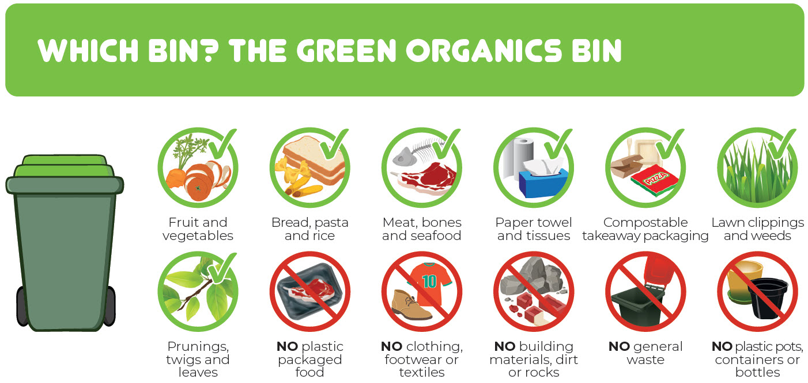
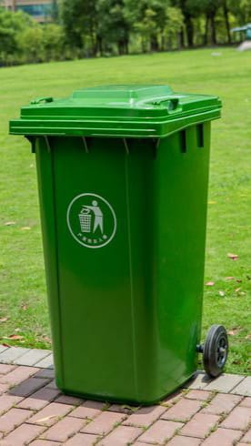

Lets Sort it out!
Solid waste segregation is a crucial practice for promoting environmental sustainability on college campuses. It involves separating waste materials into designated categories using green and blue dustbins.
Green bins
Organic waste like food scraps.Blue bins
Recyclables such as paper, plastic bottles, and metal cans.This simple act allows for proper disposal and recycling, minimizing environmental impact and promoting resource conservation.
Explore and learn with Game
